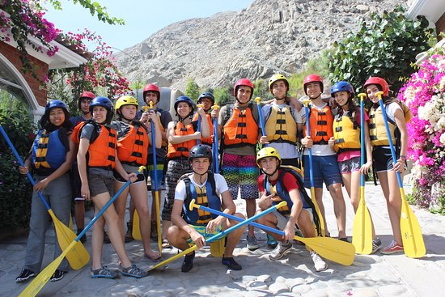

Peruvian Rafting
Specialized in adventure sports (rafting, ATVs, canopy, rappelling, cycling, trekking), as well as recreation and integration programs for companies, study and promotion programs for students, full-day trips to various destinations, experiential activities, tourist transportation , etc. We have complete equipment for all adventure sports, we are importers of items from the best brands, we have qualified guides and instructors, we work basic, intermediate and advanced level routes.
History
It is a place for people with adventurous spirits. It is a place for those who are eager to experience a variety of emotions with activities in contact with nature in the Cañete river basin. Warkoadventures is for those who want to meet new friends and share their love of adventure sports with others. We hope you take your time to find out more about warkoadventures and our commitment is to give you fun and safety with the experience of our experienced guides.